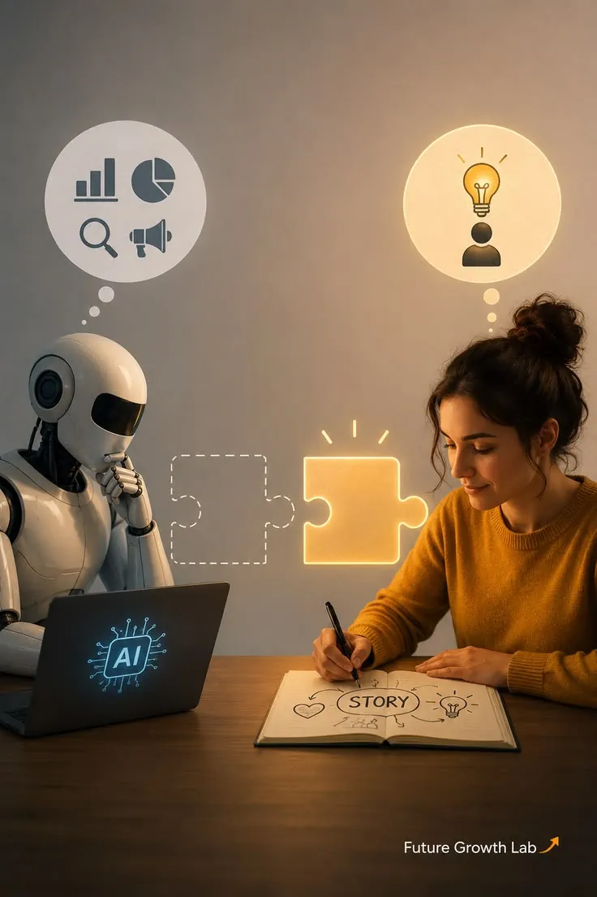

AI 01What the Next Generation of AI Could Mean for Business
Explore how intelligent systems are changing workflows, decisions, and opportunities for modern businesses.
We combine artificial intelligence, automation, data, and modern technology to create smarter digital solutions for growing businesses.
Explore practical perspectives on artificial intelligence, automation, data, and the technologies shaping modern businesses.
Artificial intelligence is moving beyond experimentation. Discover how intelligent systems can transform workflows, improve decisions, and create new opportunities for modern businesses.
Read Featured InsightDiscover practical insights, emerging technologies, and strategies for building smarter digital businesses.

AI 01Explore how intelligent systems are changing workflows, decisions, and opportunities for modern businesses.
Learn how connected data and intelligent analytics can turn complex information into useful business insight.
Discover how AI-powered workflows can reduce repetitive work and help teams focus on higher-value tasks.
Understand the infrastructure patterns behind secure, flexible, and scalable intelligent applications.
Great software combines useful functionality, thoughtful experiences, and technology that solves real problems.
See how intelligent assistants and AI agents are evolving into useful systems for everyday business operations.
Predictive analytics can help organizations identify patterns, anticipate changes, and prepare for what comes next.
Connected workflows can bring people, applications, data, and decisions together into one smoother process.
Security needs to be part of the architecture from the beginning when building modern cloud-powered systems.
Try another search term or choose a different category.